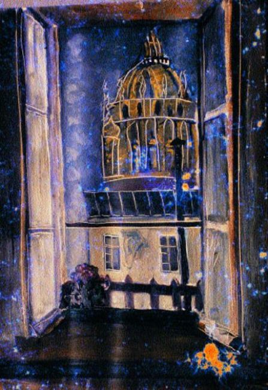

Bilimsel bir toplantıydı her halde; belki de zooloji yahut da çevre kirlenmesiyle ilgili... Ne olduğunu doğru dürüst bildiğim yok, bir tanıdık yüz bulmak ümidiyle dolaşıyorum ortalıkta; geniş bir salonda grup grup kadınlı erkekli insanlar, herhalde profesörler, doçentler filan olacak, ayakta konuşuyorlar! Burası eski bir yer, daha çok Çin saraylarını andırıyor, ama mimarisi beni hiç şaşırtmıyor, rüya bu, olur ya diyorum rüyamın içinde, zaten ara sıra uyanıp saate bakıp tekrar aynı rüyayı görmiye başlıyorum, hatta bir seferinde uyandığımda bir sigara içmek geçti aklımdan... Toplantı devam ediyor, fakat ilgimi çeken bir şey, içlerinden kimseyi tanımadığım bu kalabalıkta bana karşı anlıyamadığım bir çekingenlik hatta bir soğukluk var gibi geliyor bana! Neme lazım diye düşünüyorum, ben buraya kendi isteğimle can ata ata gelmedim, gönderildim, çalıştığım bakanlığı temsil ediyorum, çalıştığım bakanlığı temsil etmek için gönderildiğim bundan daha sıkıcı ve yabancı toplantılara gittiğim olmadı mı sanki! Bahçeye çıktım, bahçe dediğim yer çok büyük olmıyan bir avlu, karşıda iki metre kadar yükseklikte bir kapının üstünde sıvaları yer yer dökülmüş sağır bir duvar var, tıpkı Çin minyatürlerini andıran yüksek kabartmalar yer almış orada; ama bunlar canlı, durmadan dalgalı bir kıpırdanma içindeler; renkleri kül renginden başlayıp sarının tonlarından geçerek emerot yeşilinde sonuçlanıyor; üç canavar bunlar, birisi çok büyük, ortadaki en küçükleri, sağ taraftaki orta boy, her halde baba-ana-oğul olacaklar diye düşünüyorum! Hayran hayran onların duvarın üstünde yapışık oldukları yerden kurtulmak ister gibi çırpınışlarını seyrediyorum... Mimar gözüyle şöyle bir ölçüyorum, iki metre yirmi beş santim kapının içinde bulunduğu sol kısmı olsa bunların yüksekliği altı metre kadar var belki de. Sanki bir acı içinde kıvır kıvır kıvranıyorlar... Tekrar içeri döndüm, kalabalığın arasına karıştım, etrafında yaşlı genç bir takım insanların toplandığı birisine doğru yürüyorum, herhal profesörleri olacak bu diye düşünüyorum. Beyefendi diye soruyorum aradan başımı uzatıp: – Bahçe duvarının üstündeki hayvanlar nedir, ne cinstedir? Adam “Yakuti” denir, onlara diyor başını bile çevirmeden, Yakutiler’dir onlar, demek zamanımızda hâlâ yaşıyor bu tarih öncesi yaratıklar diye düşünüyorum, hemen gidip bir daha bakayım şunlara! Canavarlar duvarın üstünde durmadan kıvranıp duruyorlar... Tekrar içeri girdim, parlak tenekelerden yapılmış maketlerle doldurmuşlar ortalığı; Basic Design[11] çalışmaları gibi şeyler, hepsi de tenekeden, parıl parıl parlıyorlar... Kimseyle konuşmak olasılığı yok, bana karşı soğuk davranış düşmanlık halini aldı giderek, bakıyorum sol cebimde beş altı tane camsız gözlük çerçevesi, ikisi küçük, antika şeyler olmalı. Bu sırada kalabalıktan bir genç kadın çerçeveleri çekiştirmiye başladı, gözlüğü benimkilere takılmış, düşmanca bir tavırla bir şeyler söyleniyor... Bir gruba doğru yürüyorum, içlerinden uzunca boylu bir genç bana doğru ilerliyor: – Siz ne kötülük yaptınız bana diyor, A. Kocaaslan’la bir olup neler söylediniz? Hayretler içinde kalıyorum. A. Kocaaslan’la mı, diyorum, ben onu sevmem ki, onun bana bir yakınlığı, benim ona bir yakınlığım yoktur! Ötekiler yavaş yavaş üstüme doğru geliyorlar, hepsi de iyi giyinmiş bilgili bu insanlar kanıma susamışlar sanki; kadınlar daha da acımasız, aralarından kurtulup teneke maketlerin arasında dolaşıyorum, kaçmak istiyorum fakat ayaklarım kurşundan sanki! Bu ara gene düşman bakışlı biriyle karşılaşıyorum, başım dönüyor yere yıkılıyorum, adam oradaki şişelerden birini alıp ağzıma dayıyor, su veriyor bana; ama içimi fena! Sırıtarak: – Vah vah, kezzapmış bu, zaçyağıymış diyor, aklım başımdan gidiyor, hemen ordan başka bir şişe alıp kana kana içiyorum, boynum bambu kamışı gibi boğum boğum olmuş... Bir kadın geliyor yanıma, boynuma dokunuyor, şişlikleri gösteriyorum; hiçbir şey demeden uzaklaşıyor! Nereye gitsem hakaret, düşmanlık; kaçayım uzaklaşayım şurdan, benimle konuşan gencin elinde bir bıçağın parladığını gördüm; attım kendimi dışarı, ama nasıl çıkacağım buradan? Avlulardan bahçelerden geçerek yürüdüm, nihayet bir aralıktan caddede bir tramvayın geçtiğini görüyorum, hemen oraya doğru seyirttim, birden bakıyorum üstümde resim yaptığım, boya lekeleriyle dolu iş gömleğim, nasıl oldu da farkında olmadım diyorum kendi kendime, buraya bununla gelinir mi? Belki de ondan düşmanlıkları bana! Korku içinde eve döndüm, sokaklardan etrafıma korkuyla baka baka geçerek...
Ev orada gördüğüm sergi malzemeleriyle dolu, parlak tenekeler, sonra dünya kadar mukavva, küçüklü büyüklü kesilmiş biçilmiş, kullanılmak için hazırlanmış kaba amerikanlar, onlardan birisi gelse buraya çaldığımı zanneder; halbuki oradan elim kolum boş çıktığımı herkes gördü, gömleğimin cebine de dolduramam ki o kadar şeyi! Ama anlatamam ki, düşman olmuşlar bir kere bana, şunları nasıl ortadan kaldırsam acaba? Yakutiler hâlâ çırpınıyorlar mı, yapışık oldukları duvarda?
* * *
Ben eskiden / çingene maşası gibi / karakuru bir çocukken / kâğıttan kayıklar yapar eğlenirdim / kediler köpeklerle oynar / akşamları / elim yüzüm kir içinde / eve gelirdim / o demlerde/ lahana turşucusunun sesi / sokaklarda sürünür/ damlarda / çantaları koltuklarında / kargalar görünürdü / mektepten dönerdi kargalar / ninem onları yakalar / kanatlarından bana / yelpazeler yapardı / rüyamda geceleri / şeytan fenerleri gibi uçardım / kediler köpekler kâğıt kayıklarım / lahana turşusu / mektepli kargalar / fildişi saraylarda / saçları topuklarında / halayıklarım görünmez oldu/ hepsi bir yere sindi / ben mi unuttum onları / yoksa gözlerime / perde mi indi?
Ben benden uzaklaşabilsem / aşabilsem ben dağını / her zaman / her yerde / en ıssız köşelerde / karşıma çıkan günahın / sırrına erebilsem / ne rahat olurdum / hayatın ötesi olmadığını / çürüyen bedenden başka / toprakta bir şey kalmadığını bilebilsem / ömrümü / kabak çekirdeği / eğlencelik yer gibi / çıtır çıtır yiyerek / öğrenebilseydim bilmediklerimi / ne rahat olurdum!
Yine düştüm! Uyanıklıkla uyuma arasında oluyor bu düşüşler, kim bilir saniyenin kaçta kaçında oluyor; ışık hızıyla düşüyorum belki de, milyonlarca kilometre süren düşüşler belki de, dehşetler içinde uyanıyorum; bazen ter içinde, sık sık oluyor da üstelik, korkuyorum, acaba öteki tarafa bir çağırış mı bu? Çocukluğumda şeytan fenerleri gibi uçardım, büyük bir mutluluk duyar, bir yere konar, sonra başka bir yere uçardım, ama bu başka bir iş, için içinde bir işler var ama anlıyamıyorum, çıldırmak işten değil!
Kalabalık bir salonda konferans yeri ya da dershane gibi bir yerde Erdal Simitçiler’le (bir arkadaşım) yan yana oturuyoruz! Solda ön sıralarda Neriman’ı gördüm ağzında gayet büyük kalın bir püro var; fosur fosur içiyor, ön tarafta sağda bir yerden sigara dumanı çıkıyor; bir ses ara sıra: – Neriman Hanım lütfen sigara içmeyiniz, diyor, o ise hiç aldırmıyor! Bak diyorum Erdal’a, yine bir olay çıkaracak, içmese ya işte! Erdal, “önde içen başka birisi de var” diyor. Ama diyorum, kardeşim, onun sigarası küçük, onun için ona ses çıkarmıyorlar; bununki ne kadar kocaman baksana...
Sen 1915 yılının ağustos ayının sekizinci pazar günü çıktın ana rahminden boğanın torilden[12] pırıl pırıl güreş meydanına çıktığı gibi; boğa karanlıktan hayata, yemyeşil otlaklara çıktığını sanır zavallıcık, güçlüdür ama gücünün farkında bile değildir, hemen pikadorlar[13] sarar etrafını, ellerinde, hem de iki ellerinde ucu çengelli zıpkınları vardır, onlar bir yerlerde limonatasını içip sinyoritalara göz kırpan matadorun yardakçılarıdır, bir tane değil birkaç tanedirler, ellerinde de muletaları (sopaya geçirilmiş kırmızı bir bez, zulmün bir şerefsiz bayrağı diyelim ona!), sen hiçbir şey bilemezsin ki, yani cellat yardımcılarının atlı olanları da vardır, atların kurşuna dizilecek îdam hükümlüleri gibi gözleri bağlıdır, yanları kalın keçeler, yorganlarla kaplıdır, donuna sıçar zavallı at, seni görmez görmesine ama senin kokun onu korkudan çıldırtmaya yeter de artar bile.
Üstündeki pikadorun elinde mızrak vardır, o yerde sürünenlerden bir boy daha şereflidir diyelim, yüksekte olduğu için, fırsatını buldukça mızrağını saplar sırtına, sen ata saldırırsın habire, boynuzların işlemez, her tarafı keçe kaplı çünkü; bazen zavallı atın, senin cefakâr kardeşinin barsaklarını döktüğün de olur arenaya... Sinyoritalar dondurma yemekte, koka kola içmekte, belki de zevklerinden işemektedirler. Sinyorlar, Amerikalı olsun, yahut Çinli olsun herkes sinyordur artık arenaya girdikten sonra; sinyorlar şerefsiz götlerinden avuçladıkları boklarını yandaki sinyorun suratına sıvarlar çılgınca bir neşe içinde; artık iş sona yaklaşmıştır, göğsün karnın kalaycı körüğü gibi inmede çıkmada, hâlâ pikadorların ellerinde salladıkları muletaya saldırır durursun, onu sallayan düşmanını insanı görmezsin hiç, bazen yerini arenada yanlış seçen bir matadoru Manolete’de[14] olduğu gibi boynuzlayıp öldürdüğün de olur, olur olmasına ama gideceğin yer yine de kasap dükkânıdır! Nihayet sonun başlangıcı gelmiştir artık, alkışlar içerisinde çıkarsın arenaya sen cellat efendi, sırtında ışık elbisen[15] (Habit de lumiere) ilerlersin şan şeref içinde sinyoritaların, sayın bayların, kasapların alkışları arasında suratında gülücüğün; donuna sıçarsın korkudan, çünkü boğa, zavallı boğa her ne kadar ölesiye yorgun bitkinse de yine korkunçtur, boğadır o çünkü, bir seferinde matadorun kılıcını kalbine yiyip yıkılan boğa matador şapkasını çıkarıp halkı reveranslarla selamlarken ölüm döşeğinden kalkıp boynuzunu matadorun sırtından kalbine saplamadı mıydı? Matador yüzünde gülücüğü yardakçısının padişah fermanı gibi göğsü hizasında tuttuğu kınından, ucu eğri kılıcını alır, sinyoritalar deli gibi işerler zevklerinden, herifler çılgınlar gibi osuruk saralarına tutulurlar, senin zavallı ayakta duracak halin bile yoktur, göğsün yine kalaycı körüğü gibi kalkıp inmektedir, eğer yorgunluktan bitkinlikten hâlâ yere yıkılmadınsa matadorun sopasına gerili muletaya[16] yine saldırırsın, odur senin düşmanın çünkü, onu ustalıkla sallıyan asıl düşmanın seni hiç ilgilendirmez bile, çünkü o yerinden pek kıpırdamaz, korkarsa kaçarsa yuhalanır çünkü, matadoru öldürüp de kasabın bıçağı altına yatmaktansa şerefinle arenada ölmek de yeğdir ya!
Sonra bir kadının saçları seyrek çocuğuna Neriman tokat atmış, kadın Neriman’la tartışıyor, ne oldu ise ben çocuğun peşinden koşuyorum; nihayet yakaladım bir tokat da ben attım, çocuğun annesi geldi bana bağırıyor, sus diyorum daha çok döverim veledi, utanmadı mı koskoca kadına tokat atmıya, halbuki tokadı yiyen çocuk! Sonra çocukla konuşuyoruz, meğerse bir kitap yazmış yazdığı kitabı okul bastırmış, sonra yarısını veriyorlarmış buna, 3/4 vereceklermiş halbuki! Sen kendin bastırsaydın diyorum, dört milyona ne yapılabilirdi diyor bana, ben nasıl verirdim. Sonra Neriman’la bir bahçenin önünden geçiyoruz, tabuta benzer bir şeyler var içerde, bir el uzanmış parmağıyla gökyüzünü gösteriyor; yerde bir takım bitkiler var, bunlar çay diyor Neriman, hemen alıp pişirmeli, sonra kendimi bir kalabalığın ortasında gördüm, gri elbiseli altın dişli esmer birisi bana saldırıyor, indir şu herifin suratına bir yumruk aklı başına gelsin, yanımdaki adamlar hiç ses çıkarmıyorlar, herifin bana neden kızdığını anlıyamıyorum! Yine düştüm akıl almaz hızla korkunç boşluğa, uykuyla uyanıklık arasında oluyor bu hep, neyin habercisi acaba bu düşüşler, herhalde iyi bir şeylerin olmasa gerek!
Uykum kaçtı, sabah beşe altıya doğru ancak uyuyabildim her halde, bir de mast yaptım galiba... Sıkıntılı bir rüya gördüm, Şandor, Sevinç, Ergün, Uğurtan bir yere gitmişiz, birkaç günlük bir geziymiş bu, harap evlerin arasından geçerken ben derzlerine tutunarak bir taş duvara tırmandım, galiba bir ağaçtan ne olduğunu bilmediğim bir takım yemişler de kopardım bu arada: – Haramdır, haramdır! diye bağırtılar işittim, bu sırada Şandor’la aramızda bir resim tartışması oldu, Şandor benim bir resmimi parça parça etti, çerçeve cam darma dağınık oldu, ayrıca elinde bir makas resmin içinden bir detayı kesti, benim aklım resimde: – Nasıl yaparsın Şandor kardeşim diyorum... Sonra kendimi bir yatakta buldum; Sevinç elinde bürülmüş bir mendili yorganının altına sokup alaycı bir gülüşle belimi ölçmek istermiş gibi belime sarmıya çalışıyor; ben o kadar küçülmüşüm ki bir mendil bile çevremi sarabilecek... Ortada derdimi anlatmak için ona buna koşuyorum, Ergün’le Uğurtan bana söylemiyorlar. O sırada Şevki Kayaman’a rastladım (Bayındırlık Bakanlığında y. mimar) beni dinliyor ama hak veriyor mu vermiyor mu belli değil! Sonra yemek yenilen bir yerdeyim, uzun masalar, uzun sıralar, dost olmıyan yüzler var etrafımda, yemek söylüyorum getiriyorlar... Kalın sesli biri Arnavut şivesiyle bana atıp tutmaya başladı, adam beni öldürecekmiş; üzerinden yemiş kopardığım ağacın sahibiymiş, elinde sanırsam silah da var: – Sen kimsin yahu diyorum, ben seni tanımam, ne yaptım sana? Ben diyor şöyle yaparım böyle yaparım; etraftan düşman düşman bakıyorlar; ben biraz olsun merhamet görmek umuduyla ona buna bakıyorum, herif zaptedilir gibi değil, kara kuru, koca kafalı, kuşaklı poturlu birisi, bu sırada başımın üstünde bir at kafası görüyorum, atı elimle itmek isterken dişlerini gösteriyor, ben ittikçe o azıyor, boğazıma bir geçirirse dişlerini diye düşünüyorum, bir ara Arnavut’u ürkütmemem için işaret etti, ben atı yumuşatmak için alnını okşamaya çalışıyorum, o beni ısırmıya çalışıyor!
25 Ekim 1976 Pazartesi
Arkadaşlardan bir çoğuyla Beyoğlu’nda bir muhallebici dükkânındayız, içlerinde Nevzat, Rahmi, Samim, Ercüment gibilerini hatırlıyorum; garson geldi, yalnız çorba içtiğim halde pilav, sütlaç parası istemelerinden büyük bir kavga kopuyor, bir masanın üstüne çıkarak konuşmaya başlıyorum, işe polis karışıyor, kalabalık gittikçe artıyor, olayın devamı büyük bir konağın pancurları kapalı sofasında sürüyor; büyük bir kalabalık bize karşı garip davranışlarda, silahlar patlıyor, bir kurşun beni tam kalbimden vuruyor, düşmemeye çalışarak bir pencerenin kenarına tutunuyorum, zorla yanıma gelen Rahmi yürümemizi yoksa ezileceğimizi söylüyor, ben vurulduğumu, kalbim durduğu için yürürsem düşeceğimi, kalabalığın ayakları altında ezilmekten korktuğumu anlatıyorum!
Evimizin karşısındaki çok büyük bir ahşap konağa davet edilmişiz; annem bir yatakta yatıyor, yüzü yirmi yaşındaki kadar genç taze, yalnız bacakları şiş; ben: – Anneciğim ayak parmaklarında yara mı var? Yatağın başucu yanına eğiliyor, gözlerim yaşararak yüzünden öpüyorum... Annem benim onun öleceğini kendisinin anladığını anlamama kızarak beni paylıyor: – Aman oğlum yapma böyle, istemiyorum, geçen gün enişten de böyle yaptıydı diyor... Karşıdaki büyük ahşap evde verandalı bir odada bir kadının namaz kıldığını görüyorum, evin açık kapısından bir takım insanlar girip çıkıyor...
Saat dokuz buçuk sıralarında gittim, daha ziyade can sıkıntısından; geçen gün görüp de çıktığı için bekliyemediğim kızı aldım, tipi hoşuma gidiyor, yaşı da küçük galiba, umumhanede insan ruhunu onarmasa bile yine gidilebiliyor, hiç olmazsa Nisuaz’da[17] başıma gelenler başıma gelmez, Nisuaz’a giderim akşamları, bazen arkadaşlar da gelirler, tanıdıklar vardır, Beyoğlu’nun Madam Atina kadar değilse bile kaldırım orospularının bir üstün olanları orada olurlar, gündüzleri bir kahvedir, kaç kere Mehmet Emin Yurdakul’u görmüşümdür caddeye bakan camekânın önünde gazetesini açmış okurken; akşamları bambaşka bir yer olur, yiyecek olarak ponçik, borç, sahanda yumurta, sosis filan bulunur; bir akşam Bursalı Şefikle oturuyorduk, geçkince mallardan biri gelip masamıza ilişti, kadın cahil; Bursalı Şefik ona iltifatlar yağdırıyor, hüsnü ânınız filan gibi laflar ediyor, kadın anlamıyor, ne demek hüsnü ân, küfür filan mı yoksa... Bir akşam yine uğradım, Deli Suat’ı bekliyorum, Deli Suat Appel’in resmini yaptığı Firne[18] kadar güzel, şahane bir vücudu var ama deli, ne yapacağı belli olmaz, bir gece beni Cemile Hanım’ın evine götürdü, gece geç vakitlere kadar oturduk konuştuk alt odada, bir Rum çocuğu hizmet ediyor yirmi yaşlarında kadar; kahve filan pişirip getiriyor, Cemile Hanım’ın hem sevgilisi hem uşağı anlaşılan, Rumca defterler dolusu romanlar yazarmış, gece yarısına doğru bizi yukarı çıkardı oğlan, odaya girerken önüme şıpıdık bir çift terlik çevirdi, Cemile Hanım’ın evi düzenli bir ev yani, yatmadan evvel Deli Suat bütün yatak çarşaflarını, yastık çarşaflarını değiştirdi, neyin nerede olduğunu eliyle koymuş gibi biliyor, yapma diyorum, elalemin ötesini berisini karıştırma, ne hakkın var! Para veriyoruz, tertemiz olmasını isterim her şeyin; haklı kendisi de tertemiz çünkü; iyi ama! Yatakta bana metresi olmamı önerdi, ne demek; erkekten metres mi olurmuş, bayağı canım sıkıldı, tersledim; kızma dedi bana, fena bir şey değil ki, peki ben ne yapacağım, hiçbir şey yapmıyacaksın dedi, hiçbir şey, kocam olacaksın o kadar, ben bakacağım sana her şeyine, cep harçlığına kadar, peki dedim işim var, çalışıyorum; çalışmıyacaksın diyor, metrese çalışmak olmaz, bütün karılar alay eder benimle sonra, sen beni sinemaya, plaja şuraya buraya götür, o kadar, üst tarafı bana ait! İstemem dedim, yerinde dursun, sabahleyin korktuğum başıma geldi; Cemile Hanım çıkageldi odaya, biz henüz kalkmıştık, bir görüşte anladı her şeyi, konsolun çekmecelerinin karıştırıldığını, çarşafın, yastık yüzünün değiştirildiğini, her şeyi! Ulan deli orospu diye bağırıyor avaz avaz, bilmem nerenin deliğinin nerde olduğunu bilmezsin, Allah senin belanı versin! Hemen derlenip toparlanıp sıvıştım, ikisini saç saça baş başa bıraktım... Deli Suat gelmiyor bir türlü, gözüm kapıda; bu ara yandaki masaya ilişti gözüm, bir kadın oturmuş, üniversite öğrencisi yaşında, tertemiz giyinmiş her halde yanlış gelmiş olmalı buraya, acaba konuşsam mı, bakıyorum cesaret edemiyorum, sonra gülümsedi, hemen anladım, geldi yanıma oturdu, her şey içinde otuz liraymış, kalktık Pire Mehmet Sokağında bir eve götürdü beni, sokak kapısını çaldı açıldı, giriş katında bir odaya soktu beni; bir ara kayboldu, yattık, pencerenin camı kırık; bir kalın ambalaj kâğıdı hışırdıyor... Sıradan işimizi bitirdikten sonra giyindi ben de askımı takarken oda kapısı vuruldu; açtım bir adam içeri girmeye çalışıyor, eyvah diye düşünüyorum kadının kocası mı, sevgilisi mi, adamı elimle itmiye çalışıyorum, nihayet: – Polis dedi, baskın var, benimle yukarı gelin; çıktık en üst kata, ortalık kalabalık, Mahmut Paşa gibi adeta, kadınlardan biri sofadaki lavaboda bir şeyler yıkıyor, erkekler bir odaya doluşturulmuş, kadınlar ortada dolaşıyorlar, polislerle şakalaşıyorlar, Cemile Hanım’la kardeşi Rukiye Hanım’ı görüyorum ortada, yaşlı bir kadın: – Oh olsun size orospular diye söyleniyor; o kadar söyledim size, Kadri Bey’in kızlarısınız, bırakın bu işleri başınız yanacak dedim, dinlemediniz, oh olsun orospular size! İki kızı birden analarına saldırıyorlar: – Sus ulan cadı diyor Cemile Hanım, zaten ne olduysa senin yüzünden oldu, ayağın uğursuzdur çünkü... Ben kahrolmuş vaziyetteyim, karakola gidilecek, kim olduğum sorulacak ne cevap vereceğim, nasıl söylerim devlet memuru olduğumu! Kesseler bir damla kanım akmayacak, kara kara düşünüyorum, belki muayeneye de götürecekler (Erkeklerin muayeneye götürülmediklerini bilmiyordum o sıralar) bir ara ihtiyar kadın geldi yanıma: – Sen çok kara kara düşünüyorsun evladım, dedi; bir kahve pişireyim de iç, kendine gel! Kahveyi pişirmiş getirdi, polisler kimlik yazmıya başladılar, ev adresini versem bir türlü, daire adresini versem bir türlü, yukarısı sakal aşağısı bıyık, nihayet daire adresini verdim, ne de olsa kalabalık yer, kargaşalığa gelir duyulmaz diye... Sonunda hiçbir şey çıkmadı, arıyan soran olmadı!
22 Nisan 1992 Çarşamba / Fenerbahçe